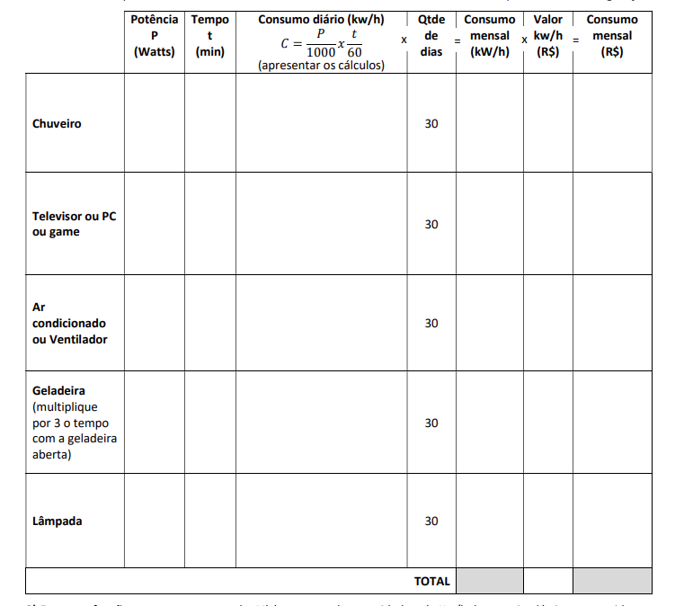

Na Matemática, a professora Cistiane Bender nos ensina como a matemática esta no nosso dia a dia, como visto na imagem abaixo, a calcular sobre o consumo de energia, por exemplo, ou funções que se encaixam na vida real. As principais atividades passadas são Função do 1º e 2º Grau , Plano Cartesiano , Teoria dos Conjuntos , e Intervalos Reais . Sendo eles muito utilizados nas atividades e mostrados como funcionam na prática do dia a dia.

Ferramentas De Desenho
Na Ferramentas De Desenho, a professora Fabricia Ferreira De Sousa nos ensinou a como editar e tratar imagens pela plataforma de desenho e edição Inkscape. Sendo uma dessas atividades a criação de Cards para o Instagram, como visto na imagem abaixo.